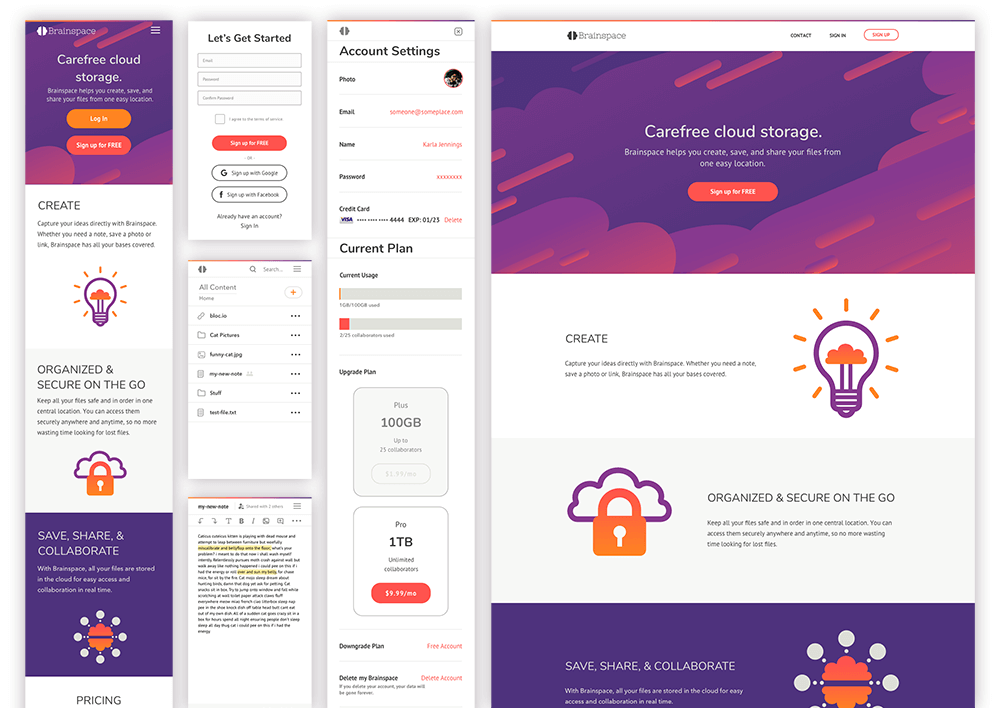

Case Study
Brainspace
Brainspace is a cloud-based storage and content management application providing a clean and simple place to collect, organize, and share files, images, and links while also allowing users to create and collaborate with others.
View Prototype Problem
There are many existing separate cloud storage services that allow collection of content, content storage, content creation and collaboration, but no service that does all these things in one unified space. Having to navigate between all these services to find a single saved item is time consuming, frustrating, and confusing.Solution
Brainspace aims to streamline and contain the ability to simply and easily collect content, create content, and collaborate in one centralized location instead of over many different applications. It allows users to save images, links, upload and access user files, create notes, and collaborate with others on those notes with a clean and simple interface.User Surveys
I started my research with by surveying users to gain insight into how the current user base currently used cloud storage, what they liked about the services they used, and what were their pain points. Additionally, key behaviors in how users collected and used cloud saved content, basic demographics, and key use needs in cloud storage services was explored.Features/Tools
Through this survey, presented to eighteen individuals, a few trends were uncovered. Over all groups, the following features were consistently marked as high importance for a cloud storage app. There was a high indication that content collaboration/sharing, multiplatform access, and syncing were important features (100%). Additionally, users stated that they preferred folders as their method of content organization (90%). The option to use a cloud storage application for free was overwhelmingly what users enjoyed the most about cloud storage. While 26% indicated that 50GB of data would be the minimum they would consider paying, 32% stated they were willing to pay $0.99/month for that storage.
Pain Points
Users indicated the following as causing most of their frustrations using cloud storage apps: Poor security/privacy Poor content organization/searching features Content accessed across devices not synchronized Confusing/difficult UIUser Personas
Based upon the user survey results, three key personas were developed to highlight the most common user needs. The goal with the personas was to understand and empathize with the user’s needs and experiences in relation to how they would interact with the service.Competitive Analysis
To determine where Brainspace would sit in the current market place, I started with an analysis--exploring SWOT, pricing, user feedback, and audience positioning--of the current competitive landscape to reveal opportunities Brainbox could capture. Using the client’s requirements, and the most popular services as indicated by the user survey as a guide, I looked at the top three players for those features. It was discovered that the competitors’ user base was slanted towards business teams and each tried to carve out their own unique niche in the market by focusing on a specific tight grouping of related features. The opportunity presented was for one centralized location with a simple, intuitive, and organized interface where everyday users could control all their content. View full competitive analysis.
MVP Priorities
- Clean/easy interface
- Strong content organizational features
- Multi-platform support
- Simple collaboration features
- Simple content creation features
- Attention to security and privacy
User Stories
With the business requirements and the motivations, goals, and pain points identified in the user personas, user stories were created for these tasks.
User Flows
The resulting user flows built out from the highest priority user tasks guided the essentials of what Brainspace’s MVP should contain. View the full set of sketches and final flows.
Sitemap
Following the userflows, a sitemap was designed to visualize how all these user flows would integrate with each together in a simple functional site. Several iterations were required to work out the most intuitive flow through the product’s site and to determine the best hierarchy for the product’s functionality. View the full size of draft and full size of final sitemap.Wireframes
Before jumping into the low-fidelity wireframes, sketched versions were conceptualized to determine which layouts would best meet the needs of the users while remaining simple and easy to navigate.
- Rework side navigation filters
- Indication on account page that starter plan is free
- Fix the credit card field
- Change some of the signup buttons on the landing page to learn more/ more info links
- Add trash filter in dashboard
Branding
Looking at the current cloud storage service landscape, the branding for this product needed to differentiate itself while also eliciting the purpose of this new service. Many names were explored before eventually upon “Brainspace” to bring to mind a place to store all the content a user wants to remember. The feeling developed for this concept was spacious, simple, smart, thoughtful, fun, and open mind with the gap imagery in the logo mark. The brain inspired logo mark was also designed in a way to mimic cloud iconography, thus pulling in the idea of “the cloud” and all that entails. Additionally, the two halves of the brain invoke feelings of coming together and collaboration. The effectiveness of the brand’s goals were confirmed through user preference testing.
“I like that it suggest brain and cloud, which makes me think of smart and organized.”
“It looks...thinky, brainy; there are two halves, and the "space" in the name implies a shared experience, reinforcing the two halves imagery.”
“Totally relate to brain space as I want good storage/organization so I have the brain space to be creative.”
With the logo finalized, the brand identity was built to complement and reinforce the feelings and functionality evoked through the logo. A style guide was developed with typography, colors, and UI elements to emphasize the core aspects of the Brainspace brand, namely fun, creative, intelligence, simplicity and collaboration.
Visual Design
As the product was converted to a high-fidelity design, iterations were presented to users through preference testing to further refine the design for the most effective user experiences. Additionally, more user testing was performed as this stage to catch any issues and to gather more data on how user’s experienced the site. Through this additional testing the design was further refined with these top action items users identified as needed further attention:- Clearly identify ToS test as a link
- Add signup and login links at the bottom of the landing page
- Add the Brainspace logo text to the logo image
- Make a new smaller section to downgrade account once the account has been upgraded